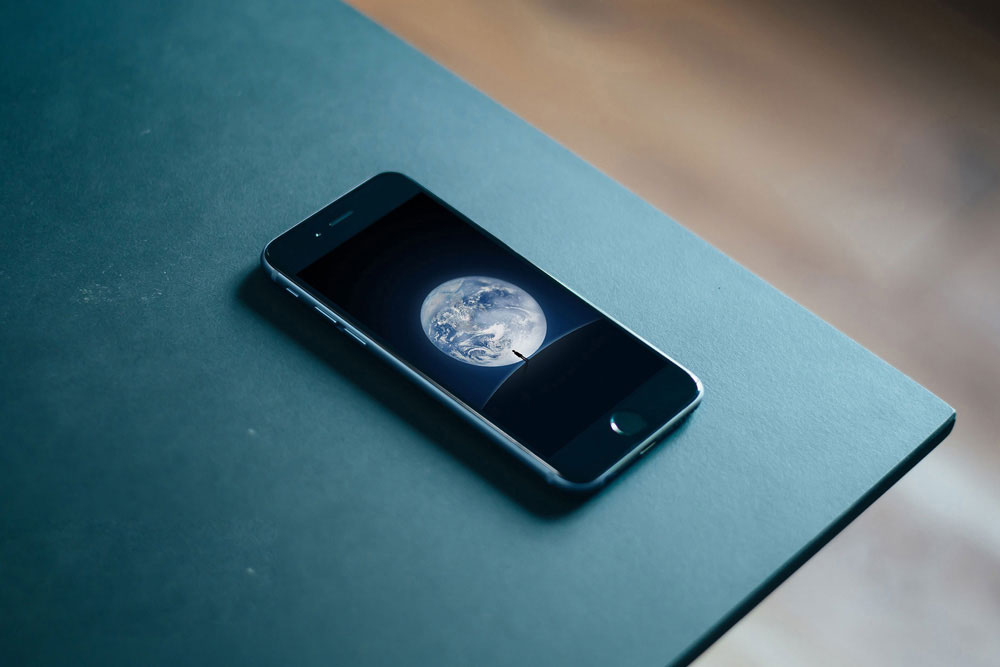

Designing for one of the world's largest messaging and social media apps is like dancing with shackles. Countless thoughts and schemes were made to polish every detail, the standard would be even more strict for the redesign.
We won't measure growth just by the number of active users or messages sent every day, but by how deeply WeChat is engaged in every aspect of a user’s lifestyle. Therefore we tried to explore different fields with our insights and experience, like WeChat Reader, WeChat TV and so on.
For a long time, WeChat was regarded as characterless and hard to describe the feeling about it, even though we all spent most of our time with it every day. Therefore defining ‘What we are’ is primary, difficult but meaningful.
To convey our ideas of this redesign — Elegant, Catious and Lead, started from the basics: interactions, flows and then the visual styles, and checked with the Framer demos quickly.

style sheet for design
Since resolution ratio kept chaning, adaptive design became a tough problem to solve, yet we hadn't fully applied auto layout at that time, we work on a walk around solution - style sheet.
Linking serval readable style sheets, designers can adjust details by changing varibles set by themselves, and pack a test version with Jenkins to check on hand at once, all on their own.